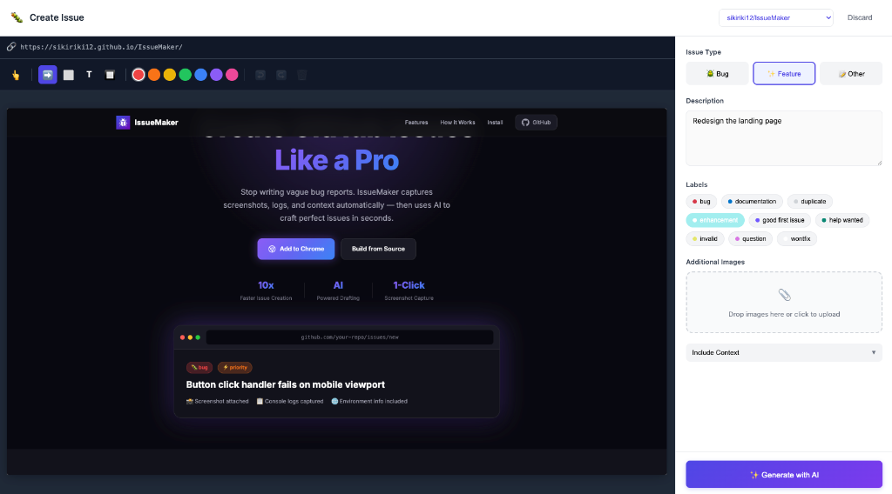

See It In Action
From Bug to Issue
From Bug to Issue
In Seconds
Capture, annotate, generate with AI, and submit — all in one seamless flow.

Step 1: Capture a screenshot, annotate with arrows, rectangles, and blur tools.
Add your description and select labels.

Step 2: AI generates a well-structured issue with summary, motivation,
proposal, and acceptance criteria. Review, edit, and submit!